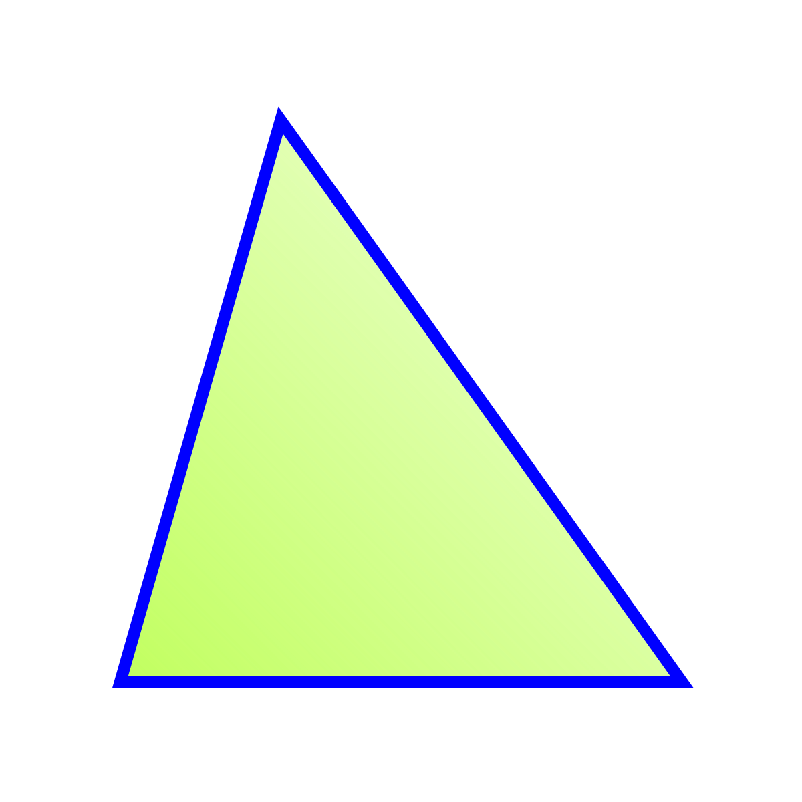

Triangulo acutangulo
Un triángulo acutángulo es un triángulo en el que los tres ángulos
son agudos
, o ángulos que miden menos de 90 grados. Las medidas de los
ángulos de un
triángulo acutángulo pueden variar siempre que sus ángulos
sean menores
de 90 grados.
